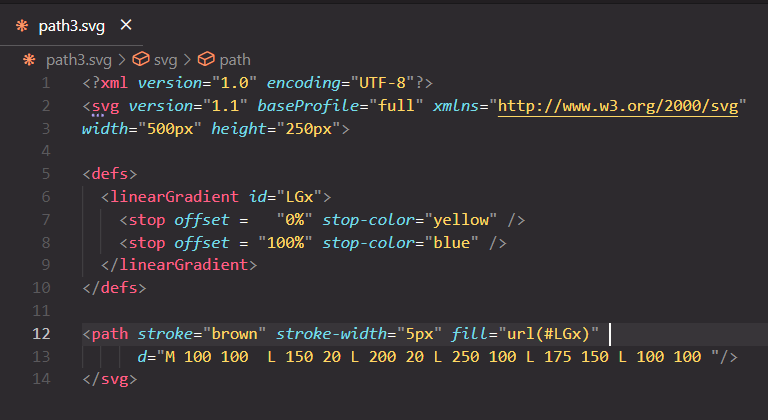

1. Creating a yellow rectangle and blue border
Considering the following image of a svg file, for create a rectangle:

Considering the following image of a svg file, for create a rectangle:
Considering the next svg format image for create a blue circle
Considering the next svg image in order to create it:
